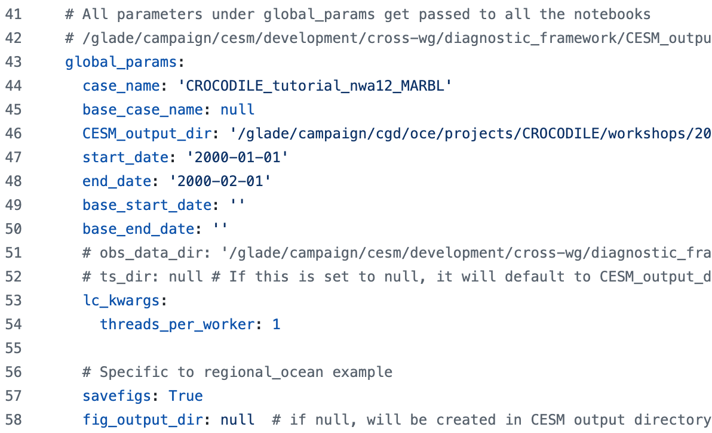
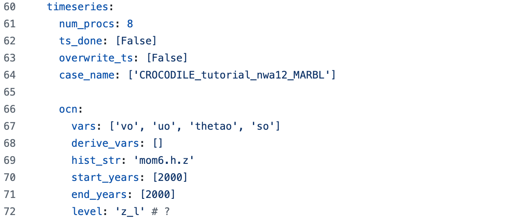
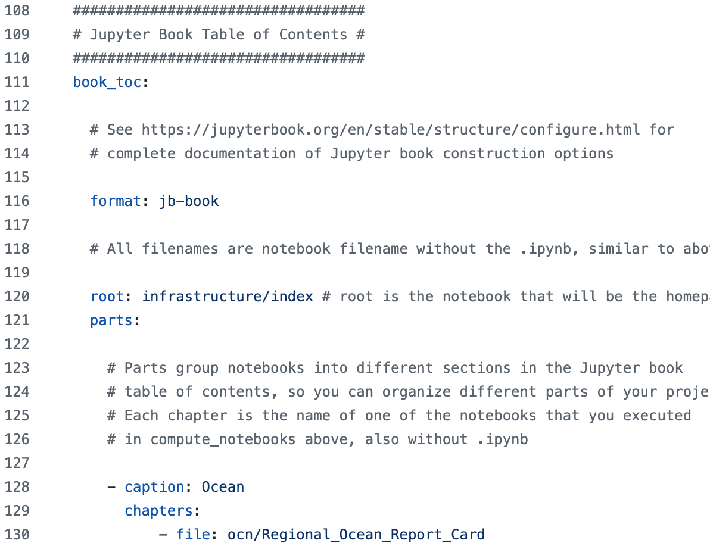
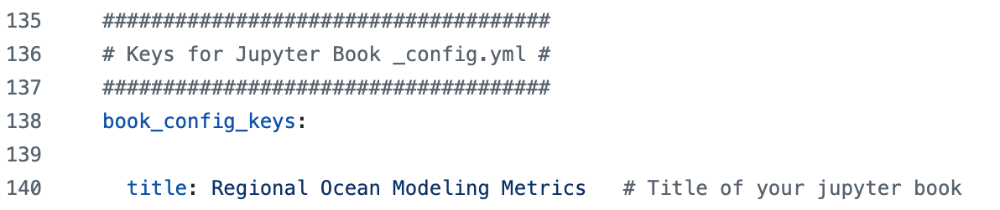

Installing CUPiD#
This page follows the CUPiD Installation Documentation, with some tweaks specific to the NCAR super computer.
Checkpoint #1
At this point you should have a running JupyterHub instance.
Task 0: Open a Terminal in JupyterHub for this Activity#
0.2 Open a terminal#
Open a Terminal instance by scrolling all the way down in the launcher tab and selecting Terminal.
This will open a terminal with the following prompt:
USERNAME@crhtcXX:/glade/work/USERNAME/crocodile_2025>
Checkpoint #2
At this point you should have an open terminal in JupyterHub,
and the current working directory should be your crocodile_2025 workshop directory.
Task 1: Clone CUPiD and Install Environments#
CUPiD is available from the NCAR organization on github.com. It requires conda to manage a few different python environments. The NCAR system administrators provide conda through a module, which you can access by running
module load conda
1.1: Clone the repository from github#
Running the following command will create a subdirectory named CUPiD in your current working directory:
git clone --recurse-submodules https://github.com/NCAR/CUPiD.git
The rest of this tutorial will refer to the location you installed CUPiD as ${CUPID_ROOT}.
To be able to copy and paste blocks of commands directly, we need to add the variable to your environment.
Most of you are using bash or zsh,
which have been the default shell on Linux and Unix computers for a while now.
To set the environment variable run
cd CUPiD
export CUPID_ROOT=`pwd -P`
Note: This environment variable only exists in this specific terminal. It will need to exported again if you open a separate terminal, unless you modify your start files (see the NCAR documentation for this process for more information).
Using a different shell?
If you have changed your shell to csh or tcsh,
you will want to run the following instead:
cd CUPiD
setenv CUPID_ROOT `pwd -P`
If you do not know for a fact that you changed your shell,
you can probably assume you are using bash.
To know for sure, though, run
echo $SHELL
TEMPORARY EXTRA STEP (until PR is merged)
git fetch origin pull/294/head:CROCODILE_Workshop_2025
git checkout CROCODILE_Workshop_2025
1.2: Install two conda environments#
CUPiD needs a python environment with specific packages installed to run the CUPiD tools, while the diagnostic notebooks provided with CUPiD need a different set of packages.
To run CUPiD itself we use the (cupid-infrastructure) environment, then CUPiD runs the diagnostics notebooks with (cupid-analysis).
We will use mamba to install these environments and the --yes option to avoid mamba waiting for approval before continuing with the install:
Install (cupid-infrastructure) and (cupid-analysis)#
cd ${CUPID_ROOT}
mamba env create -f environments/cupid-infrastructure.yml --yes && \
mamba env create -f environments/cupid-analysis.yml --yes
Notes:
This is two separate commands separated by
&&; the second command (installing(cupid-analysis)) will only run if the first command (installing(cupid-infrastructure)finishes successfully). Also, the\is a line continuation operator - without it, the command would be on a single line and very long.If you remove the
--yesflag,mambawill ask you to confirm the installation after it determines what packages will be installed.
CUPiD Configuration#
While the CUPiD environments install, let’s talk about how CUPiD works.
CUPiD can provide diagnostics for a single run,
or compare a single run to a single baseline run.
Future development will enable comparison of more than two different runs,
but the next exercise in this tutorial will be using CUPiD to create diagnostics for a single CESM case that has already been run.
This will be done by running the cupid-diagnostics command from the (cupid-infrastructure) environment.
(cupid-infrastructure) $ cupid-diagnostics --help
Usage: cupid-diagnostics [OPTIONS] [CONFIG_PATH]
Main engine to set up running all the notebooks.
Args: CONFIG_PATH: str, path to configuration file (default config.yml)
Returns: None
Called by ``cupid-diagnostics``.
Options:
-s, --serial Do not use LocalCluster objects
-atm, --atmosphere Run atmosphere component diagnostics
-ocn, --ocean Run ocean component diagnostics
-lnd, --land Run land component diagnostics
-ice, --seaice Run sea ice component diagnostics
-glc, --landice Run land ice component diagnostics
-rof, --river-runoff Run river runoff component diagnostics
-h, --help Show this message and exit.
Notice that cupid-diagnostics has a few options to allow you to run a subset of the default diagnostics,
but the CONFIG_PATH argument (which defaults to config.yml) is the important argument.
This YAML file (YAML is a recursive acronym, standing for “YAML Ain’t Markup Language”;
you have encountered it when dealing with conda environment files as well)
contains all the details about what CUPiD should do.
This can also be found on the CUPiD webpage, on the Configuration File page.
data_sources Section#
The first section in the config.yml file is data_sources:
This typically does not need to be edited by the user,
and may be removed in favor of command-line arguments to the cupid-diagnostics script.
It points CUPiD to the notebook library and also tells CUPiD where to execute the notebooks
(we want the notebooks to be run in the output directory rather than the nblibrary directory).
computation_config Section#
Much like the data_sources section,
this section typically does not need to be modified by users and may turn into command-line arguments.
It provides the name of the conda environment to run notebooks in by default (users can specify different environments for individual notebooks),
and it also sets logging information:
global_params Section#
There are some parameters that are passed to every notebook. These are typically variables associated with the runs being compared (things like CESM case names, location of data, length of the run, and so on):

time_series Section#
One of the data standardization tasks CUPiD does is converting CESM history files to time series files (rather than have many variables at a single time level, these files are a single variable at many time levels). The notebooks provided for this tutorial read history files, and the interface for this section is still under development, so we won’t spend much time discussing it.

compute_notebooks Section#
This section tells CUPiD what notebooks to run,
and what parameters should be passed to that notebook in addition to the ones listed in global_params.
CUPiD will always run the infrastructure section,
and the user can specify what components (atm, ocn, lnd, etc) should also be run.
By default, CUPiD will run all the notebooks in this section.
The first key under each component (e.g. Global_PSL_NMSE_compare_obs_lens) is the name of a notebook,
and CUPiD will look in nblibrary/{component} for that file.
In this example, CUPiD will run nblibrary/atm/Global_PSL_NMSE_compare_obs_lens.ipynb.
You can provide more than one notebook per component.
book_toc Section#
After running all the notebooks specified in compute_notebooks,
CUPiD can use Jupyter Book to create a website.
Unfortunately there is not a great way to view HTML files that are stored on the NCAR super computers,
so for this tutorial we will look at the notebooks that have been executed.
To build the website, however, the book_toc section lays out how to organize the notebooks into different chapters.
Our examples organize the pages by component,
but in other cases it may make sense to group notebooks differently
(e.g. global surface plots in one section, time series plots of global means in another).

book_config_keys Section#
This section is used to set the title of the Jupyter Book webpage.
It should probable be combined with the book_toc section,
or maybe it should be a command line argument instead.
